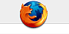

Firefox Logo
Archivierte Anleitung
Dieser Artikel wurde archiviert, da er - oder Teile daraus - nur noch unter einer älteren Ubuntu-Version nutzbar ist. Diese Anleitung wird vom Wiki-Team weder auf Richtigkeit überprüft noch anderweitig gepflegt. Zusätzlich wurde der Artikel für weitere Änderungen gesperrt.
Hinweis:
Diese Anleitung ist veraltet und eignet sich nur für Breezy und Hoary.
Zum Verständnis dieses Artikels sind folgende Seiten hilfreich:
Manche mag es stören, dass statt des klassischen Firefox-Logos das Logo in Form einer blauen Erdkugel zu sehen ist. Diese Anleitung behandelt die Wiederherstellung des Original-Logo.
Folgende Bilder müssen heruntergeladen werden:
Anschließend werden folgende Befehle im Terminal [1] ausgeführt (gegebenfalls zuvor in den Ordner wechseln, in dem sich die Bilder befinden)
Versionen ab Firefox 1.5¶
sudo cp logo-firefox.png /usr/share/pixmaps/mozilla-firefox.png sudo cp logo-firefox.png /usr/share/pixmaps/mozilla-firefox.xpm sudo cp logo-firefox.png /usr/lib/firefox/icons/default.xpm sudo cp document-firefox.png /usr/lib/firefox/icons/document.png sudo cp logo-firefox.png /usr/lib/firefox/chrome/icons/default/default.xpm
den PC neu starten oder
killall gnome-panel
eingeben
sich an dem Original-Logo erfreuen

Versionen niedriger als Firefox 1.5¶
sudo cp logo-firefox.png /usr/share/pixmaps/mozilla-firefox.png sudo cp logo-firefox.png /usr/share/pixmaps/mozilla-firefox.xpm sudo cp logo-firefox.png /usr/lib/mozilla-firefox/icons/default.xpm sudo cp document-firefox.png /usr/lib/mozilla-firefox/icons/document.png sudo cp logo-firefox.png /usr/lib/mozilla-firefox/chrome/icons/default/default.xpm
den PC neu starten oder
killall gnome-panel
eingeben
sich an dem Original-Logo erfreuen
Quelle: Ubuntuforums 
Wer es ganz genau nimmt, wird das Logo beim Aufruf von "Hilfe -> Über Mozilla Firefox" und bei about: noch vermissen. Auch dieses lässt sich verändern. Zuerst müssen wir uns die benötigten Bilddateien herunterladen: 
Nun muss man - der Firefox sollte dabei nicht laufen - allerdings im Verzeichnis /usr/lib/mozilla-firefox/chrome/ bzw. /usr/lib/firefox/chrome/ für Firefox-Versionen ab 1.5, die Datei browser.jar verändern. Eine jar-Datei ist ein Java-Archiv und lässt sich unter anderem mit dem Archivierungsprogramm File Roller öffnen. Da diese Datei für den Firefox nicht ganz unwichtig ist, wird vor jeder Veränderung ein Backup angelegt. Danach kopiert man sich am besten die Datei in ein eigenes Verzeichnis, um sie modifizieren zu können [1]:
Versionen ab Firefox 1.5¶
sudo cp /usr/lib/firefox/chrome/browser.jar /usr/lib/firefox/chrome/browser.jar.bak cp /usr/lib/firefox/chrome/browser.jar ~/Desktop/
In der Datei browser.jar befinden sich im Pfad /content/branding/ die beiden Dateien about.png und aboutCredits.png, die beide das veränderte Logo enthalten. Man kann nun einfach die beiden Bilder die wir herunterladen haben in dieses Verzeichnis im Archiv ziehen, um die JAR-Datei entsprechend anzupassen.
Abschließend muss man die Datei wieder zurückschieben [1]:
sudo cp ~/Desktop/browser.jar /usr/lib/firefox/chrome/
Beim nächsten Start von Firefox gibt es nun auch an den verbliebenen Stellen das Original-Logo.
Versionen niedriger als Firefox 1.5¶
sudo cp /usr/lib/mozilla-firefox/chrome/browser.jar /usr/lib/mozilla-firefox/chrome/browser.jar.bak cp /usr/lib/mozilla-firefox/chrome/browser.jar ~/Desktop/
In der Datei browser.jar befinden sich im Pfad /content/browser/ die beiden Dateien about.png und aboutCredits.png, die beide das veränderte Logo enthalten. Man kann nun einfach die beiden Bilder die wir herunterladen haben in dieses Verzeichnis im Archiv ziehen, um die JAR-Datei entsprechend anzupassen.
Abschließend muss man die Datei wieder zurückschieben [1]:
sudo cp ~/Desktop/browser.jar /usr/lib/mozilla-firefox/chrome/
Beim nächsten Start von Firefox gibt es nun auch an den verbliebenen Stellen das Original-Logo.
- Erstellt mit Inyoka
-
 2004 – 2017 ubuntuusers.de • Einige Rechte vorbehalten
2004 – 2017 ubuntuusers.de • Einige Rechte vorbehalten
Lizenz • Kontakt • Datenschutz • Impressum • Serverstatus -
Serverhousing gespendet von